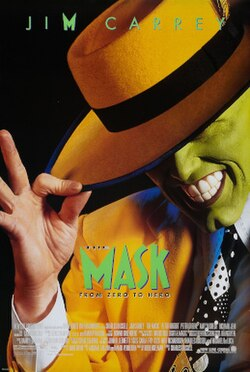

This is a classic comedy movie casting one of my favorite comedy actors of all time, Jim Carrey portrays a bank teller whom's life is very simple and boring but everything changes for him when he dares to "save the life" of an individual that seems to be drowning in the city river jut to find out that it was just a bunch of trash floating that hides the mask of an ancient god of jokes

This is another good comedy movie featuring the Wayans brothers where they parody multiple popular scary movies such as "Scream", "I know what youy did last summer", "Friday 13th", "The blair witch proyect", "The Shinning" and many more

This is a movie that tells the story of a young man with a hearing aid caused by a car accident when he was little, that accident marks his life however doesn't get him away from the wheel as he becomes a master at driving, he gets involved with dangerous people and now has to pay a debt by play key part as the get away driver on several bank hits, the movie tells the end of his carrer where he tries to be free from that life